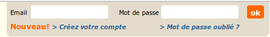

Évolution de la définition du handicap
- 1967 : le rapport Bloch-Lainé : « Étude du problème général de l'inadaptation des personnes handicapées »
- Loi française du 11 février 2005 «
[…] limitation d'activité ou restriction de participation à la vie en société subie dans son environnement par une personne
» - 13 décembre 2006 : Convention relative aux droits des personnes handicapées (CDPH) de l'ONU
« […] l'interaction avec diverses barrières peut faire obstacle à leur pleine et effective participation à la société sur la base de l’égalité avec les autres »

Technologies d'assistance pour l'ordinateur
- Plage braille
- Clavier monomanuel
- Head-Stick
- Eye Tracker
- Lecteur d'écran
- Clavier visuel
- Contacteur au souffle
- Trackball
- Contrôle par la pensée

Le label e-accessible
- 50 critères prioritaires de niveau A
- niveau simple A
- 50% des critères applicables de niveau double A (AA)
- niveau double A (AA)
- niveau double A (AA) + au moins un critère triple A (AAA)

« Le label e-accessible pour les administrations » sur notre blog
<section>
Thématique RGAA : Structuration
Partie d'un document ayant une valeur sémantique : un regroupement thématique de contenu (la liste des produits d'une catégorie dans une boutique en ligne)
hxouaria-label- Racine d'une nouvelle hiérarchie de titres
- Références RGAA :
- 9.2[A]

<article>
Thématique RGAA : Structuration
Partie indépendante d'un document pouvant être consultée, extraite ou réutilisée pour elle-même : un produit dans une liste de produits d'une catégorie dans une boutique en ligne
- Références RGAA :
- 9.2[A]
<nav> [A]
Thématique RGAA : Structuration
- Éléments de navigation principaux (navigation principale, secondaire, collection de pages).
- Obligatoires.
- Références RGAA :
- 9.2[A]

<aside>
Thématique RGAA : Structuration
- Contenus indirectement reliés au contenu principal, peuvent être consultés de manière indépendante
- Optionnels (pas vérifiés)
- Références RGAA :
- 9.2[A]

<header> [A]
Thématique RGAA : Structuration
- Contenus d'introduction
- Obligatoire pour l'en-tête du document
- Peut contenir des titres, de la navigation
- Références RGAA :
- 9.2[A]

<footer> [A]
Thématique RGAA : Structuration
- Contenus de pied de page, d'articles ou de contenus regroupés par
<section> - Obligatoire pour le pied de page du document
- Références RGAA :
- 9.2[A]

<main> [A]
Thématique RGAA :Structuration
- Regroupement du contenu principal de la page (les éléments répétés - navigation, publicité - ne devraient pas être structurés avec).
- Obligatoire
- Unique dans la page
- Références RGAA :
- 9.2[A]

Landmarks ARIA [A]
Thématique RGAA : Navigation
Uniques dans la page :
-
role="banner" -
role="main" -
role="contentinfo" -
role="search"
role="navigation" : plusieurs occurrences autorisées pour les éléments de navigation principaux
- Références RGAA :
- 12.10[A]

Page active et fil d'ariane [AAA]
Thématique RGAA : Navigation
- Indication de la page active dans le menu de navigation
- Fil d'ariane
- Références RGAA :
- 12.8[AAA]
- 12.9[AAA]
- 12.12[AAA]

Changements de langue [AA]
Thématique RGAA : Éléments obligatoires
Attribut lang sur l'élément ou un parent
- Références RGAA :
- 8.7[AA]
- 8.8[AA]

<p>Des contenus vidéos sur le Web
(<span lang="en">on</span>
et <span lang="en">offline</span>).
</p>
Images vectorielles [A]
Thématique RGAA : Images
role="img"sur l'élément<svg>;aria-labelcontenant l'alternative de l'image ;<title>contenant l'alternative de l'image.
- Références RGAA :
- 1.1[A]
- 1.2[A]
- 1.3[A]

<svg role="img" aria-label="Exemple d'image SVG, un demi cercle rouge recouvre un carré vert">
<title>Exemple d'image SVG</title>
<desc>Un demi cercle rouge recouvre un carré vert</desc>
<rect fill="green" height="300px" width="300px" />
…
</svg>
Images description détaillée [A]
Thématique RGAA : Images
- Description détaillée adjacente ;
- Attribut
longdesc; - ou bien lien adjacent.
<img src="img.png"
alt="[alternative de l'image]"
longdesc="description.htm" />
- Références RGAA :
- 1.6[A]
- 1.7[A]

Texte en image [AA]
Thématique RGAA : Images
- Texte en image remplacé par du texte stylé
- ou mécanisme de remplacement
- Références RGAA :
- 1.8[AA]


Texte en image [AAA]
Thématique RGAA : Images
Texte en image remplacé par du texte stylé
- Références RGAA :
- 1.9[AAA]
Zoom texte [AA]
Thématique RGAA : Présentation
- Zoom texte seul (Firefox).
- Agrandissement à 200%.
- Taille de police relatives.
- Linéariser la page.
Du responsive tout en em, par Marie Guillaumet
- Références RGAA :
- 10.4[AA]

Exemple : toulouse.fr - access42.net
Information par la forme, la taille ou la position [A]
Thématique RGAA : Présentation
- Alternative textuelle, par exemple via un attribut
title - Ou une version alternative.

Exemple : un cours sur openclassrooms.com
- Références RGAA :
- 10.14[A]
- 10.15[A]
Intitulés de bouton [A]
Thématique RGAA : Formulaires
value="Intitulé du bouton"alt="Intitulé du bouton"title="Intitulé du bouton"aria-label="Intitulé du bouton"aria-labelledby="[Id_du_texte]"
- Références RGAA :
- 11.9[A]

<input type="image" src="loupe.png" alt="Rechercher sur le site" />

Ordre de tabulation, piège au clavier [A]
- Ordre de tabulation cohérent : modales, système d'onglets, menu déroulant, etc.
- Pas de piège au clavier (focus figé dans un composant)
Exemple sur fnac.com (navigation latérale cachée mais accessible) et modale sur le bouton « panier »)
Exemple sur ter SNCF, dans « Produits » choisir « Abonnement de travail hebdomadaire < 75km » et tabulez
Exemple sur la Bibliothèque de Toulouse atteindre le lien "Feuillez le manifestas en ligne"
- Références RGAA :
- 12.13[A]
- 12.14[A]

Utiliser ARIA
- Respecter les règles d'usage : Notes on Using ARIA in HTML.
- Surcharges autorisées.
- Respecter le mappage de role : 3. Allowed ARIA roles, states and properties.
À lire : Kit de survie du développeur ARIA

ARIA
Comment un lecteur d’écran sait-il de quoi il parle ?

Motif de conception
Motif de conception (design pattern) : décrit structure, rôles et propriétés et comportement d'un composant JavaScript(widget).
- Références RGAA :
- 7.5[AAA]

dialog.